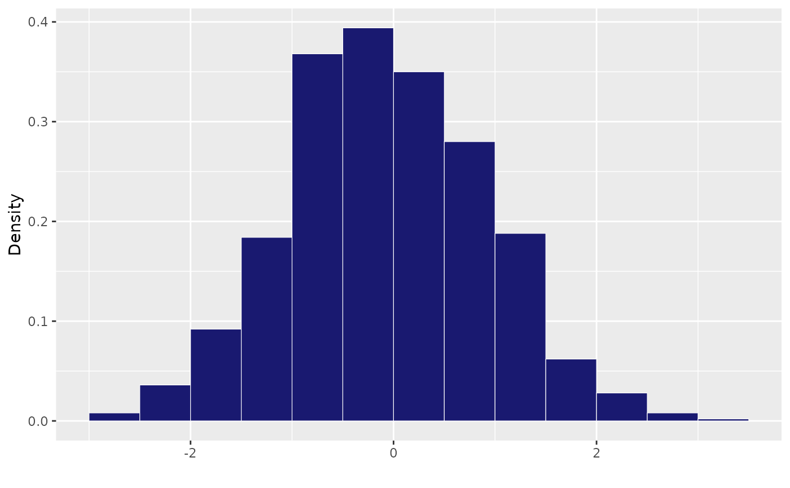
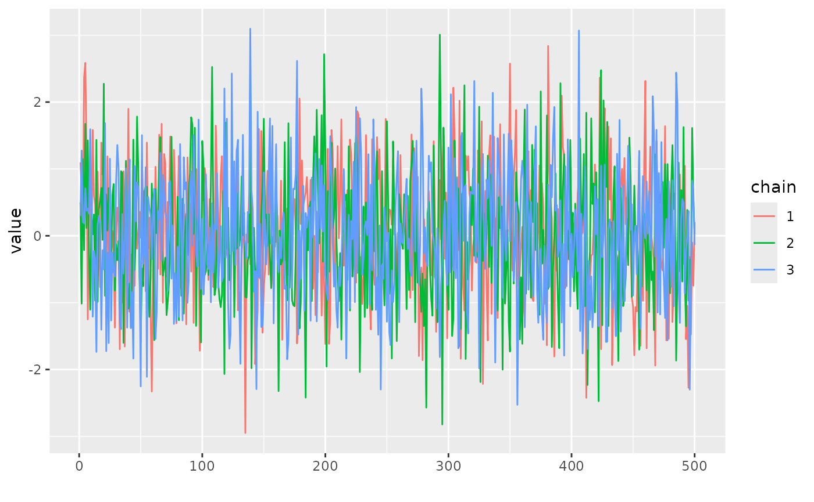

Useful Functions
useful-functions.Rmd
library(Growth)This vignette presents a collection of useful functions used in the main functions of this package to run nimble models and get simplified outputs. They usually do not need to be run on their own.
Manipulate nimble outputs
Estimate Rhat values
The function Rhatfun() allows to take outputs of nimble
chains and to estimate Rubin Gelman convergence statistics.
Summary
The function sum_nim() makes a summary table with main
statistics for each parameter from output chains of a Bayesian model
rb = array(rnorm(15*3*4), dim = c(15,3,4))
sum_nim(rb, nch = 3)
#> mean sd QI 2.5 QI 97.5 Rhat
#> 1 0.09619219 1.157270 -2.024822 2.507279 1.0841636
#> 2 -0.11454537 1.006133 -1.674106 1.459683 0.9758006
#> 3 0.18182322 1.098268 -1.796275 2.098465 0.9530246
#> 4 0.26837835 1.033190 -1.467862 2.060732 1.0475169Histogram for posterior distribution
The function hist_post() prepares a histogram ggplot for
posterior distribution of a given parameter. It can be used within codes
for plotting grids of posterior distributions of several parameters. It
takes a numeric vector x as argument.
hist_post(rnorm(1000))
#> Registered S3 methods overwritten by 'ggpp':
#> method from
#> heightDetails.titleGrob ggplot2
#> widthDetails.titleGrob ggplot2
Plots for convergence
The function conv_plot() prepares a ggplot to loog at
convergence of posterior distribution of a given parameter. It takes a
numeric vector x as argument and m the number
of iteration.

Write nimble codes
The function Gro_writenimblecode() writes a nimble code
for a growth model including individual random effect. It takes as
argument:
-
paramsnames of all parameters of the model. -
modellikelihood of the nimble model -
randomname of the parameters that must include an individual random effect -
maxvallist including the maximum values for prior for each parameter -
minvallist including the minimum values for prior for each parameter
#Example for a von bertalanffy model
Gro_writenimblecode(params = c('z0', 'zinf', 'gamma'),
model = "for (j in 1:N){{
logz[j] ~dnorm(z0[IND[j]] + zinf[IND[j]] *
(1 - exp(- gamma[IND[j]] * logx[j])), sigma_res)}}",
random = "gamma",
maxval = list(z0 = 5),
minval= list(z0 = 0, zinf = 0, gamma = 0)
)
#> expression(sigma_res ~ dunif(0, 5), mu_z0 ~ dunif(0, 5), for (i in 1:Nind) {
#> z0[i] <- mu_z0
#> }, mu_zinf ~ dunif(0, 1000), for (i in 1:Nind) {
#> zinf[i] <- mu_zinf
#> }, mu_gamma ~ dunif(0, 1000), sigma_gamma ~ dunif(0, 5), for (i in 1:Nind) {
#> gamma[i] ~ dnorm(mu_gamma, sd = sigma_gamma)
#> }, for (j in 1:N) {
#> {
#> logz[j] ~ dnorm(z0[IND[j]] + zinf[IND[j]] * (1 - exp(-gamma[IND[j]] *
#> logx[j])), sigma_res)
#> }
#> })